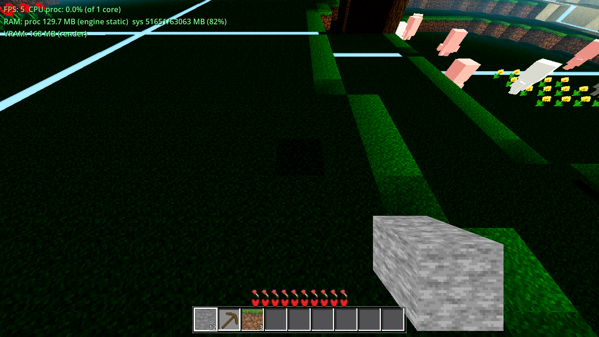
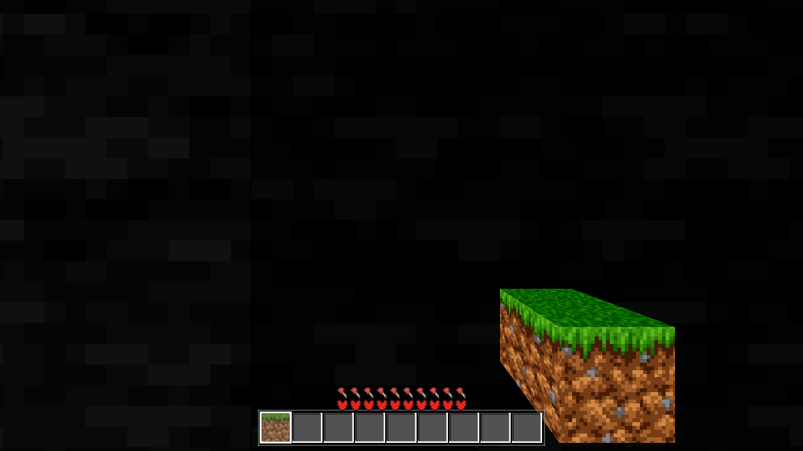
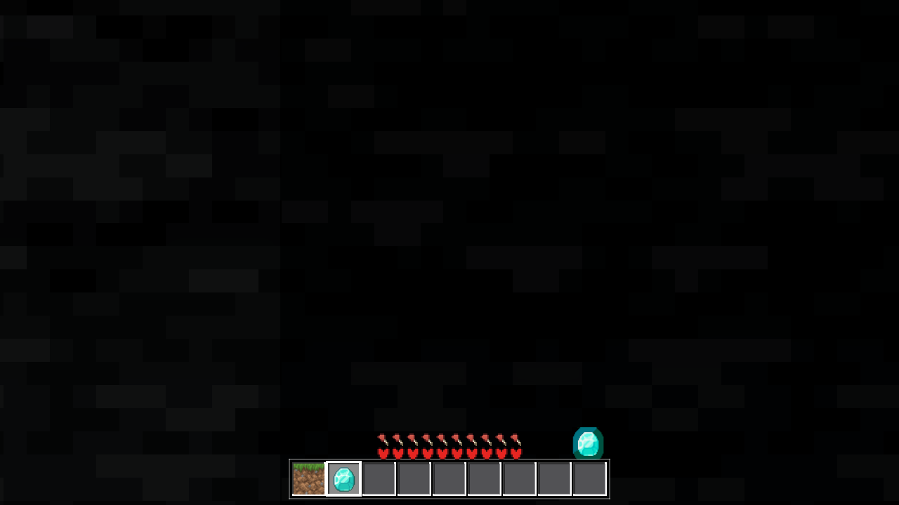
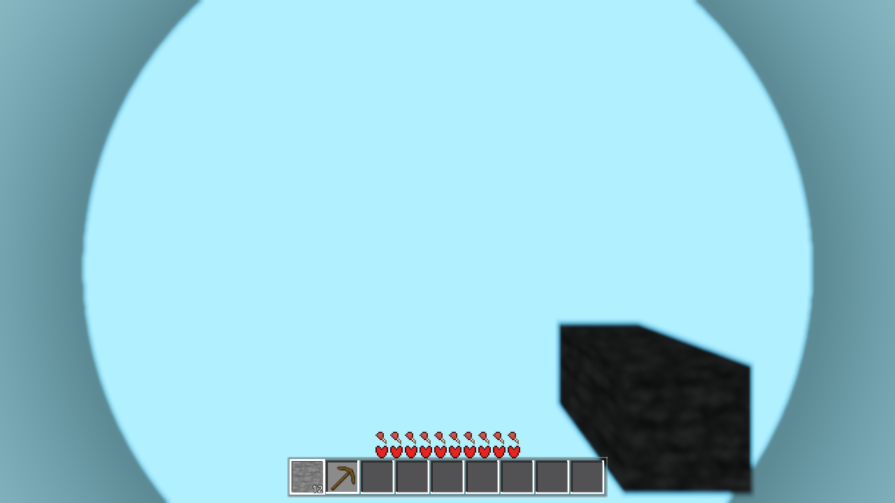
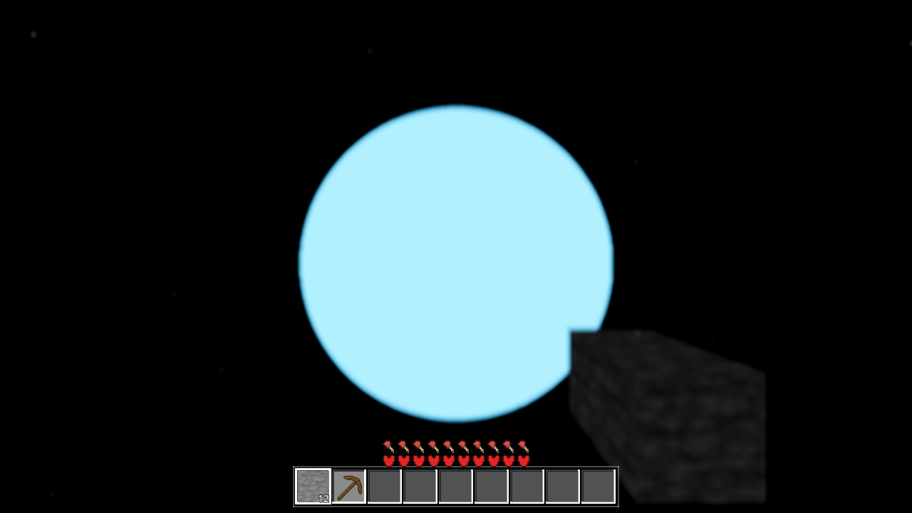
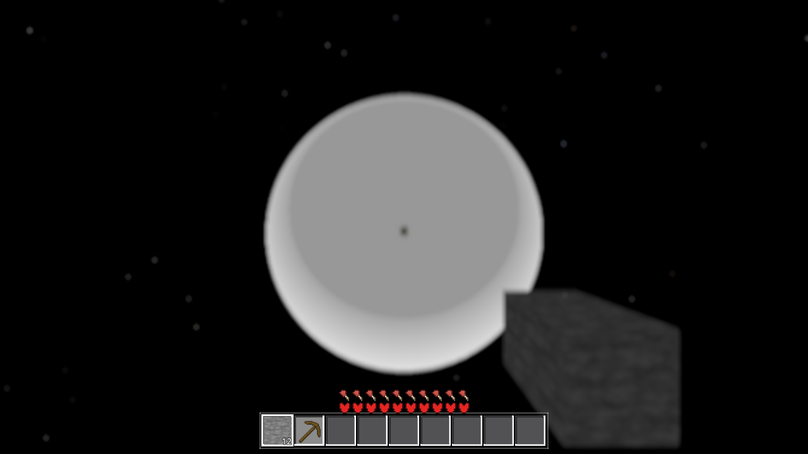

2026-10-03 · testing pipeline · no game-code changes · headless arms untouched · no commits
xvfb-run -a env HOME=/tmp/dsh_home VK_ICD_FILENAMES=/usr/share/vulkan/icd.d/lvp_icd.json … godot --path godot --rendering-driver vulkan (lavapipe ICD + Xvfb; both preinstalled).Vulkan 1.4.318 - Forward+ - Using Device #0: Unknown - llvmpipe (LLVM 20.1.8, 256 bits). The device name says “llvmpipe” — that is the lavapipe Vulkan driver (DRIVER_ID_MESA_LLVMPIPE, Mesa 25.2.8); the renderer string (Forward+ vs Compatibility) is the discriminator. A run reporting Compatibility/OpenGL must fail loudly..gdshader whose first line is # is silently dropped — no SHADER ERROR — and the material falls back to the engine default (white lit). core/satellite_body.gdshader (59-line # header) is the only shipped shader with a # first line → the satellite body has never rendered its shader on ANY path. Fix: // header or shader_type on line 1.render_mode transparent is INVALID in 4.7.1 → SHADER ERROR: Invalid render mode: 'transparent' on both renderers → core/cloud_layer.gdshader (AC-0385 cloud shell) never renders. Fix: drop the keyword (transparency is inferred from writing ALPHA).tasks/harness_data.yaml gains the fwdshot row (rendered + --check clean); godot/HARNESS.md §2 “software GL proxy” warning replaced with the verified truth + assertion + both defects; §4 recipe = Forward+ primary; godot/OPS.md §1 machine facts + §6 render budget rewritten.ulimit -v 8388608 KB never exceeded (no raise), R4 only, no load arm, no R50, no TASKS.yaml edit, no commits.Machine: no GPU, no display. Already installed: xvfb, vulkan-tools, and Mesa’s lavapipe software Vulkan ICD at /usr/share/vulkan/icd.d/lvp_icd.json (libvulkan_lvp.so, Mesa 25.2.8, LLVM 20.1.8, 256 bits; apiVersion 1.4.318 per vulkaninfo). No packages were installed.
Working recipe (from repo root; one godot at a time; memory cap as always):
export HOME=/tmp/dsh_home; mkdir -p $HOME
xvfb-run -a env HOME=$HOME VK_ICD_FILENAMES=/usr/share/vulkan/icd.d/lvp_icd.json \
AWECRAFT_SNAPSHOT=/abs/path/shot.png AWECRAFT_SIZE=1280,720 AWECRAFT_RADIUS=4 \
AWECRAFT_AIM="x,y,z,yaw,pitch" AWECRAFT_TIME=0.5 AWECRAFT_SNAP_DRAIN=12000 \
bash -c "ulimit -v 8388608; timeout 1500 /home/angrygiant/tools/godot/godot \
--path godot --rendering-driver vulkan"
The boot line IS the assertion. Every render in this ticket’s logs begins with:
Vulkan 1.4.318 - Forward+ - Using Device #0: Unknown - llvmpipe (LLVM 20.1.8, 256 bits)
Adapter-name trap: the lavapipe device is also named “llvmpipe” (DRIVER_ID_MESA_LLVMPIPE) — grepping for “llvmpipe” does NOT identify the path. The discriminator is the renderer string: Forward+ (this path) vs Compatibility (the old GL proxy: OpenGL API 4.5 (Core Profile) Mesa 26.0.6 … - Compatibility - Using Device: Mesa - llvmpipe (LLVM 20.1.8, 256 bits)). A render whose boot line reports Compatibility/OpenGL for a ticket claiming Forward+ evidence must fail loudly, not pass quietly.

AWECRAFT_DSSTATS overlay: ~5 FPS, VRAM 468 MB (render), sys RAM 82%.| Run | Wall clock | rc | Notes |
|---|---|---|---|
| ground shot + DSSTATS | ~300 s | 0 | ~5 FPS in overlay; SNAP_DRAIN 12000 not fully drained |
wallshot arm (AWECRAFT_LOGIC=wallshot) | 82.9 s | 0 | previously rc=124 at 300 s timeout under the gl_compatibility proxy |
| satellite 668 m snapshot | 332.9 s | 0 | AWECRAFT_AIM="8,794,8,0,-1.57", noon |
| satellite 3000 m snapshot | 281.5 s | 0 | same, …,"8,3126,8,…” |
| isolation variants (nofog / noworld / noaero / noclouds / 3000-nofog-noaero) | 231–325 s | 0 | each a full snapshot; boot line asserted in every log |
Practical vs possible: rendering on the shipped path is POSSIBLE everywhere and mARGINALLY PRACTICAL at R≤4 — a ~300 s budget per shot, ~5 FPS interactive. It is not practical as a per-gate check; it is practical as one render per visual ticket (a visual ticket already justifies a few minutes). R50 and the load arm were excluded by this ticket’s constraints, so their cost on this path is unmeasured (expect worse; the satellite far-plane extends to ~11.5 km at high altitude).
Memory: the standing ulimit -v 8388608 KB (8 GB) was never exceeded — no raise was used.
The wallshot arm (lives in godot/scenes/harness.gd, not main.gd) now completes on Forward+: rc=0 in 82.9 s, versus a 300 s timeout (rc=124) on the same box under llvmpipe-OpenGL. Result, verbatim:
RESULT {"before":false,"block":true,"block_box_vis":true,"block_depth_on":false,
"block_frame_stone":4816,"block_vm_nonstone":29664,...,"item":true,
"item_sprite_vis":true,"item_vm_cyan":110,"shots":"","wall_face_z":8.0}


Stated conditions: altitude 668 m (eye y=794, nadir straight down; satdiag recorded alt=792.4(player), phase=LOADED, op_nadir=1.000, vis=true) and render radius R4 (fog_far=69.6 / render_edge=80.0, 87.5% fog setting), noon (AWECRAFT_TIME=0.5), 1280×720. Planet R=4000 (satellite sphere radius R+SEA=4126, centre (0,−4000,0); satdiag pos=(0,-4000,0)).

sky_display(0.5) = (135,206,235), lifted by the aero grade to (177,240,255)); the satellite lies 668 m from the eye, far beyond fog_far 69.6 m.
S=1.000), and the star field renders (star sprites of varied size/hue). No stars appear inside the satellite’s rim annulus — the star shader’s AC-0386 planet-disc occlusion (ray-sphere at R+SEA=4126) is active on this path.| Variant | Disc at nadir | Reading |
|---|---|---|
| fog on (above) | (177,240,255) uniform, both radii | 100% fogged object (fog colour + grade) |
AWECRAFT_AERO=0 (no clouds/wash/grade) | exactly (135,206,235) = the fog colour = sky_display(0.5) | confirms the disc is fog-occluded; the surround is the plain ungraded sky gradient |
AWECRAFT_NO_FOG=1 | warm-white centre (252,250,244) + grey ring (219,222,218); small dark nadir terrain dot | the un-fogged disc is a lit white sphere (Lambert) — an engine fallback material, not the baked terrain texture |
AWECRAFT_NO_WORLD_VIS=1 (world hidden) | the 330 px inner disc survives (a Main-child contribution); the outer ring vanishes | two superimposed objects: the fallback sphere (world child = the satellite) + a smaller Main-child disc of the same fog colour — identity of the latter unresolved, flagged below |
3000 m, NO_FOG+AERO=0 (isolation) | white Lambert sphere, lit from the bottom of the frame = the sun’s azimuth; dark 15 px nadir dot = the real 80 m terrain patch | the satellite renders with the fallback material; the sky pass + stars work; background pure black (no sky material when aero off) |

Open observation (flagged, not asserted): the fallback sphere’s apparent radius is ≈ 22° at 3000 m (220 px) where the full R+SEA sphere’s rim would be 35.3° (373 px) at the same eye height — and ≈ 52° at 668 m where the full rim is 59.4°. The geometry is verified complete (satdiag: mesh faces=12 verts=28812, custom AABB ±4126, face-0 geometry AABB exactly the home-patch region, scale=1.000, camera far extended to h+2·RB+200 — no clipping). The shortfall appears on this software Vulkan path only (never observable before this ticket, because the path was never exercised). It does not change any conclusion above; it belongs in the follow-up ticket’s scope.
Bottom line for the demo: “the planet’s colour” on the shipped path, as shipped, is whatever the engine’s fallback material plus the fog produce — a pale cyan (177,240,255) disc at 668 m / (135,206,235) ungraded — because the satellite’s own shader is silently never compiled (Defect 1). The feature has never shown its baked terrain on any renderer, and this ticket is the first to have a render of the shipped path at all to prove that from.
# first line silently kills a .gdshader (product, SILENT)Symptom: godot/core/satellite_body.gdshader lines 1–59 are a #-comment header. On this engine (4.7.1, verified on BOTH renderers), a .gdshader whose first line begins with # is dropped with no SHADER ERROR, no warning, nothing; the material then draws the engine fallback. In the 668/3000 m logs above there are zero shader errors for the satellite — yet the render is the white fallback sphere, not the baked texture.
Probe matrix (throwaway project .scratch/ac0391/vkprobe/, pixel-readout per shader):
| Probe | First line | Result (Forward+, same probe on Compat) |
|---|---|---|
| c13 | shader_type spatial; + ALBEDO = vec3(1,0,0) | renders RED — control, path works |
| c14 | # comment then the same red shader | renders the background colour — shader silently gone, no log line |
| c-load path | same file via ResourceLoader.load + sm.shader | same silent drop — the game’s exact load path |
| b-series | #define on line 1; # after code | #define fine; # after code = HARD tokenizer error (Unknown character #35) — so the failure is specifically “# as the very first line”, silently |
Blast radius: core/satellite_body.gdshader is the only shipped .gdshader with a # first line (all others start shader_type or //). Fix (one line, follow-up ticket): convert the header to // (or move shader_type spatial; above it). Until then the satellite body shows the fallback material on every renderer — this ticket’s renders are the first visual proof.
render_mode transparent is invalid in 4.7.1 (product, LOUD)Symptom: godot/core/cloud_layer.gdshader (the AC-0385 cloud shell) line 2: render_mode unshaded, transparent, depth_draw_always;. Every render with clouds present logs, verbatim:
SHADER ERROR: Invalid render mode: 'transparent'. ERROR: Failed to compile shader ...
on both Forward+ and Compatibility. The cloud shell nodes exist and are visible (satdiag: clouds: n=3 c0{vis=true r=4400 …} c1{… r=4330} c2{… r=4275}) but produce no pixels — the AWECRAFT_CLOUDS=0 and AWECRAFT_AERO=0 renders are pixel-identical to the clouded ones. Valid render_mode keywords probed on this engine: unshaded, cull_back, cull_disabled, fog_disabled, blend_add, depth_draw_always (no_fog is also invalid). The in-file comment claiming “the shipped forward_plus compiles it” is false and should be corrected with the fix. Fix (follow-up ticket): drop transparent — transparency is inferred from writing ALPHA; keep depth_draw_always.
tasks/harness_data.yaml — new fwdshot row (recipe, boot-line assertion, adapter-name trap, measured budgets, both defects, “one render per visual ticket”); harness_doc.py --render + --check clean.godot/HARNESS.md — §2: the “renders are software GL, geometry-only proxy” warning is replaced with the verified truth (Forward+ via lavapipe works here; the assertion; the adapter-name trap; both defects); the AWECRAFT_SNAPSHOT env row updated (absolute path, Forward+ recipe, SNAP_DRAIN marker); §4: Forward+ recipe primary, the legacy gl_compatibility line kept for compat A/B only.godot/OPS.md — §1 machine facts (lavapipe ICD + xvfb + vulkan-tools preinstalled; Forward+ proven 2026-10-03); §6 rewritten (shipped-path budget ~300 s/shot, R≤4, one render per visual ticket; compat recipe demoted to proxy; evidence scope: Forward+ path yes, real-GPU perf/precision no).TASKS.yaml edit; no commits (coordinator closeout). main.gd, game.gd, drop.gd untouched (other session).load arm, no memory-cap raise (8 GB stood); headless arms unchanged and untouched as gates.clouds: none runs are pixel-identical — and not the wash, which is a full-screen square) and rides along to the follow-up.| File | What it is |
|---|---|
fwd_ground_r4_dsstats.png | Forward+ ground render + DSSTATS overlay (~5 FPS, 468 MB VRAM) |
sat_alt668_r4_fwd.png | demo: 668 m / R4 / noon — pale-cyan disc (177,240,255) at nadir, fog-occluded |
sat_alt3000_r4_fwd.png | demo: 3000 m — 22° disc vs space + stars, AC-0386 occlusion active |
sat668_noaero.png | disc = exactly the fog colour (135,206,235); surround = ungraded sky |
sat668_nofog.png | fog off: white fallback sphere (two Lambert zones) + nadir terrain dot |
sat3000_nofog_noaero.png | isolation: Lambert white sphere lit from below (sun azimuth), stars, black space |
wallshot_fwd_held_on_wall.png, wallshot_fwd_held_item_on_wall.png | wallshot retest outputs (rc=0, 82.9 s) |
.scratch/ac0391/*.log (git-ignored) | every run’s full stdout: boot line (the assertion), RESULT jsons, SATDIAG state/config/clouds lines, the SHADER ERROR line |
.scratch/ac0391/vkprobe/ (git-ignored, throwaway) | the probe project behind the §5/§6 matrices (safe to delete after closeout) |